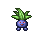
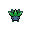

Pokédex / #043

Oddish #043
GrassPoison
Its scientific name is 'Oddium Wanderus.' At night, it is said to walk nearly 1,000 feet on its two roots.
Generation 1 · Kanto

Stats
| Attack | 50 | |
|---|---|---|
| Defense | 55 | |
| Sp. Atk | 75 | |
| Sp. Def | 65 |
In the wild
| Wild level | 5–15 |
|---|---|
| HP | 45 |
| Experience | 7 |
| Egg groups | Grass |
Evolution
- Evolves into Gloom at level 30.
Moves
| Level | Move | Type | Category | Power | Energy | Cooldown | Effect | |
|---|---|---|---|---|---|---|---|---|
| 1 | Tackle | Normal | Physical | 15 | 15 | 1s | Tackle is one of the most common and basic moves a Pokemon learns. It deals damage with no additional effects. | |
| 5 | Absorb | Grass | Special | 20 | 35 | 5s | Absorb deals damage and the user will recover 50% of the HP drained. | |
| 10 | Acid | Poison | Special | 40 | 40 | 6s | Acid deals damage and has a 10% chance of lowering the target's Special Defense by one stage. | |
| 15 | Poison Powder | Poison | Status | – | 30 | 20s | Poison Powder poisons the target. | |
| 20 | Stun Spore | Normal | Status | – | 55 | 10s | Stun Spore paralyzes the target. | |
| 25 | Mega Drain | Grass | Special | 40 | 65 | 12s | Mega Drain inflicts damage, and 50% of the damage dealt to the target is restored to the user. The amount of HP recovered is always rounded down. |
Field abilities
Cut
Special abilities
Chlorophyll
Egg moves
After YouCharmFlailIngrainNature PowerRazor LeafSecret PowerSynthesisTeeter DanceTickle
Technical machines
BideBullet SeedDouble EdgeDouble TeamEnergy BallGiga DrainMega DrainMimicRageReflectRestSludge BombSolar BeamSubstituteSwords DanceTake DownToxic
Drops
| Item | Amount | Chance | |
|---|---|---|---|
| seed | 1–3 | 66.7% | |
| leaf | 1 | 7.41% | |
| strawberry | 1–3 | 5% | |
| gracidea | 1 | 4.94% | |
 | oddish doll | 1 | 0.1% |